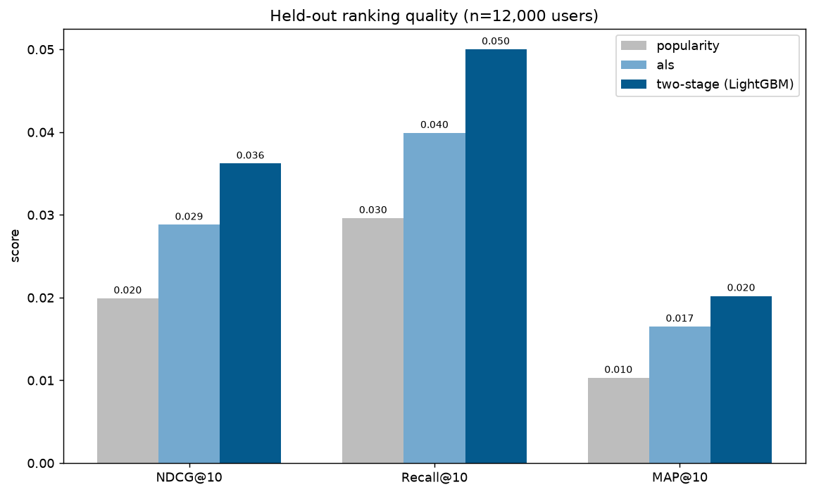
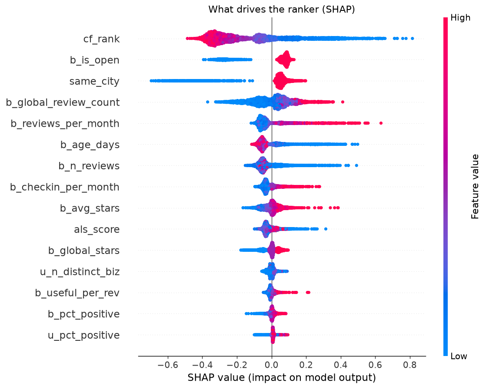

Two production-style systems on the Yelp Open Dataset (~7M reviews, 150k businesses, 2M users). A two-stage restaurant recommender (ALS generates candidates, a LightGBM LambdaMART model reranks them) plus a semantic search engine over review text using a fine-tuned sentence encoder and a FAISS index. Everything is evaluated on a held-out future time window, so the scores reflect genuine generalization, not leakage.
- Temporal split + iterative k-core filtering → 1.2M interactions, 85k users, 14k businesses.
- ~40 engineered user / business / cross features, all computed strictly before the prediction window.
- LightGBM reranking lifts NDCG@10 ~25% over ALS and ~82% over a popularity baseline.
- Fine-tuning a MiniLM encoder lifts search Hit@10 ~33% on businesses it never saw.
- SHAP explains why the ranker promotes a place; Streamlit dashboard demos all three models.
+25%
NDCG@10 lift
+33%
Search Hit@10
7M+
Reviews
~40
Features
Python
ALS
LightGBM / LambdaMART
PyTorch
FAISS
SHAP
Streamlit
View code on GitHub →

Held-out ranking quality: the two-stage model wins on every metric.

SHAP: what actually drives each recommendation.